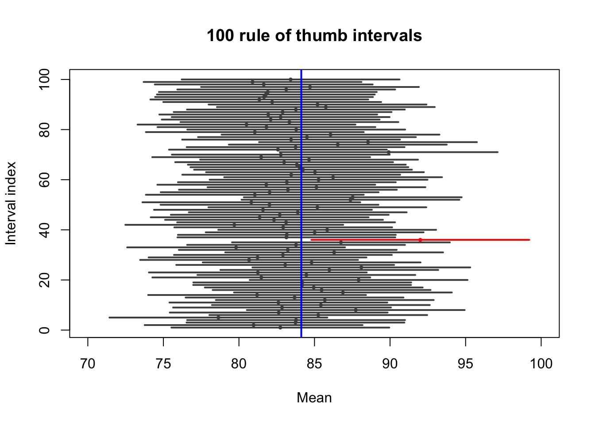

Estimation is the process of inferring a population parameter from the sample data. For the moment we will be concerned with the estimation of the population mean (expected value) using the sample mean. We pretty much know that \(\bar{x}\neq \mu\). It is just way too unlikely that they would be exactly equal. How much can we trust this estimate?
To answer this, we need to know how much variability we get from our the sampling process. One way to do this is through the standard error (standard deviation of the mean) as it reflects the differences between the estimates (sample means: \(\bar{x}\)) and the target parameter \(\mu\). The standard error reflects the precision of an estimate. The smaller the better. Recall: \[SD(\bar{X})=\frac{SD_{X}}{\sqrt{n}}\]
9.1 Confidence interval
The confidence interval is another common way to quantify uncertainty about the value of a parameter. It is an interval calculated from the data.
Confidence interval (intuitively): Given the data we observed, these are the range values of that more likely contain \(\mu\).
If we increase our range then we’ve got a higher probability of “capturing” \(\mu\) in the range.
A typical confidence interval statement is:
NoteExample
We are 95% confident that the true mutation rate lies between 10^-3 and 10 ^-2.
What is the meaning of the 95% confidence? Since different samples will give us different intervals, different researchers will provide different intervals. On average, however, 19 out of 20 of those intervals (95%) will contain the true value of the parameter. On average 1 out of 20 intervals (5%) will not contain the parameter value.
A rule of thumb A good quick approximation to the 95% confidence interval for the population mean is obtained by adding and subtracting two (or 1.96) standard errors from the sample mean.
For example, let’s pretend the framingham study includes all the population and we are interested in knowing the mean glucose level in the population.
# Real Data from the Framingham Study#install.packages("riskCommunicator")library(riskCommunicator)library(dplyr)library(ggplot2)names(framingham)
L <-min(intervals[,1])U <-max(intervals[,2])covers <- (intervals[,1] <= true) & (true <= intervals[,2])# Plotplot(NA, xlim =c(70, 100), ylim =c(1, 100),xlab ="Mean", ylab ="Interval index",main ="100 rule of thumb intervals")for (i in1:100) { col <-if (covers[i]) "gray30"else"red"segments(intervals[i,1], i, intervals[i,2], i, col = col, lwd =2)points(xbar[i], i, pch =16, col = col, cex =0.6)}abline(v = true, col ="blue", lwd =2)

sum(covers)
[1] 99
What happens if you increase the sample size?
9.2 Z-confidence intervals
From the CLT, we know that \(\bar{x}\sim N(\mu,\sigma^2/n)\). This means we can standardize \(\bar{x}\) using a Z-score: \[Z=\frac{\bar{x}-\mu}{\frac{\sigma}{\sqrt{n}}}\].
\[P(-1.96\frac{\sigma}{\sqrt{n}}<\mu-\bar{x}<1.96\frac{\sigma}{\sqrt{n}})\] Then \[P(\bar{x}-1.96\frac{\sigma}{\sqrt{n}}<\mu<\bar{x}+1.96\frac{\sigma}{\sqrt{n}})\]
Therefore there is a 95% probability that the interval \((\bar{x}-1.96\frac{\sigma}{\sqrt{n}},\bar{x}+1.96\frac{\sigma}{\sqrt{n}})\) contains \(\mu\).
set.seed(1)mu <-50sigma <-10n <-20B <-100# number of intervals to plotalpha <-0.05L <- U <- xbar <-numeric(B)z <-qnorm(1- alpha/2)for (b in1:B) { x <-rnorm(n, mean = mu, sd = sigma) xbar[b] <-mean(x)# Normal-approx CI using the TRUE variance (sigma^2) se <- sigma /sqrt(n) L[b] <- xbar[b] - z * se U[b] <- xbar[b] + z * se}covers <- (L <= mu) & (mu <= U)# Order so non-covering intervals appear first (easy to see)ord <-order(covers) # FALSE then TRUEL <- L[ord]; U <- U[ord]; xbar <- xbar[ord]; covers <- covers[ord]# Plotplot(NA, xlim =range(L, U, mu), ylim =c(1, B),xlab ="Mean", ylab ="Interval index",main =sprintf("%d simulated %.0f%% Normal CIs (known sigma; red = misses)", B, 100*(1-alpha)))for (i in1:B) { col <-if (covers[i]) "gray30"else"red"segments(L[i], i, U[i], i, col = col, lwd =2)points(xbar[i], i, pch =16, col = col, cex =0.6)}abline(v = mu, col ="blue", lwd =2)legend("bottomright",legend =c("CI covers true mean", "CI misses true mean", "True mean"),col =c("gray30", "red", "blue"),lwd =c(2, 2, 2),bty ="n")